Week 1 (21/06 to 24/06)
Goals
The goals of this week were to:
- calculate and plot sea-ice fraction (\(f_{sic}\)) and surface wind (\(w\)) speed differences between the Last Glacial Maximum (LGM) and Pre-Industrial (PI) for individual models & the inter-model mean
- read four papers, focusing on two themes:
- disequilibrium mechanisms, comparing Hamme (2017) to Loose (2016)
- gas exchange parameterizations, comparing Nicholson (2011, 2016) to Liang (2013)
Forcing Comparisons
Methods
I first determined which products from the Coupled Model Intercomparison Project 5 (CMIP5) outputted the two variables that we care about: \(f_{sic}\) and \(w\).
In order to have a consistent comparison across both the LGM and PI, I only used those model products that outputted both variables for both time periods of interest. This left 7 models:
| Institution |
Model |
Time Period |
| NCAR |
CCSM4 |
1800-1900 |
| LASG-CESS |
FGOALS-g2 |
550-649 |
| MRI |
MRI-CGCM3 |
2501-2600 |
| MIROC |
MIROC-ESM |
4600-4699 |
| CNRM-CERFACS |
CNRM-CM5 |
1800-1999 |
| MPI-M |
MPI-ESM-P |
1850-1949 |
| IPSL |
IPSL-CM5A-LR |
2601-2800 |
After storing all model data - each varying in latitude, longitude, and time dimension but all having a monthly resolution starting in the first month and ending in the last month of the respective years stated above - a climatological mean for each month was calculated over the entirety of the model run.
A basic quality control was run over the CMIP5 data.
All longitude data was put into the [0, 360] if not already.
Additionally, if the \(f_{sic}\) was out of 100, this was corrected to be out of 1, and we calculated \(w\) from the model meridional and zonal wind magntiudes using:
\[
w = \sqrt{u^2 + v^2}.
\]
Then, all missing data was removed from the datasets and then linearly interpolated to the UVic grid.
All negative CMIP5 data was also removed.
Lastly, we average per month over the entire ensemble, giving the final ensemble mean.
From these arrays, we calculate the absolute delta, \(\Delta\), following in the case of the wind:
\[
\Delta w = w_\text{Ensemble} - w_\text{UVic}.
\]
To capture the spread of the ensemble, we calculated the maximum and minimum at each UVic grid point.
We also calculated the spread of each variable at each grid point, following in the case of the wind:
\[
\text{S}_w = \max w - \min w.
\]
LGM Results
First, I present the UVic monthly \(f_{sic}\) below, which are the monthly forcing files for the TMs:
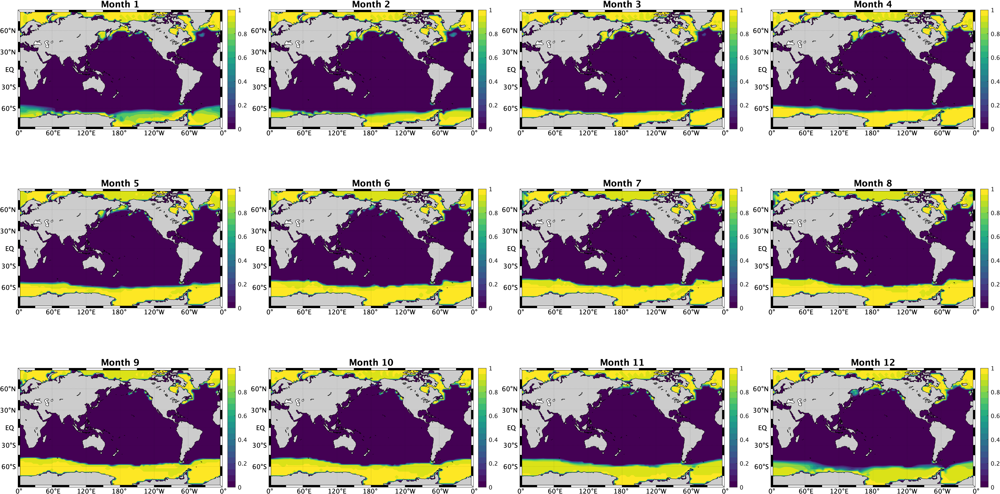
The monthly averaged forcing files for \(w\) are then presented below, also used to force the UVic model-derived TMs:
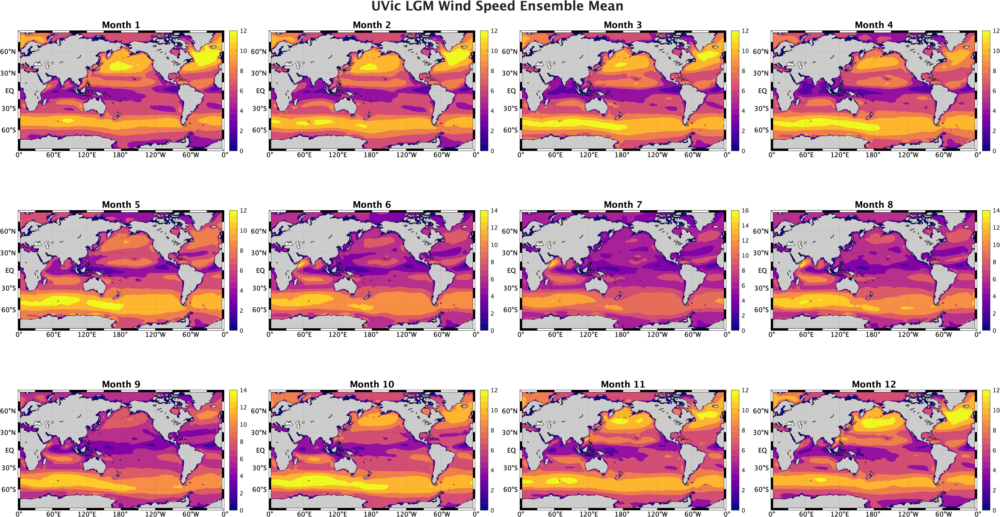
Now, I present ensemble mean data below, calculated from the 7 CMIP5 data products as discussed above.
First, I plot \(f_{sic}\):
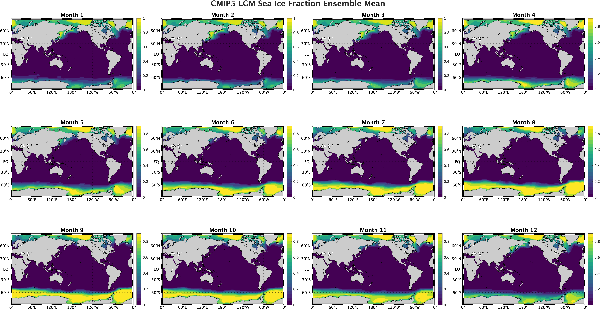
Next, we look at \(w\):
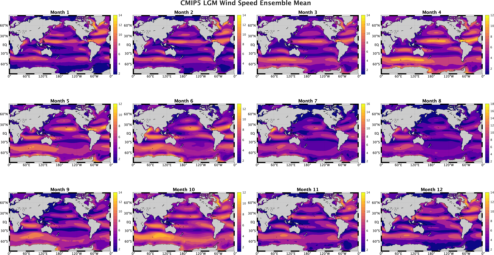
Applying the definition of \(\Delta\) to the data presented above, we get the differences for \(f_{sic}\):
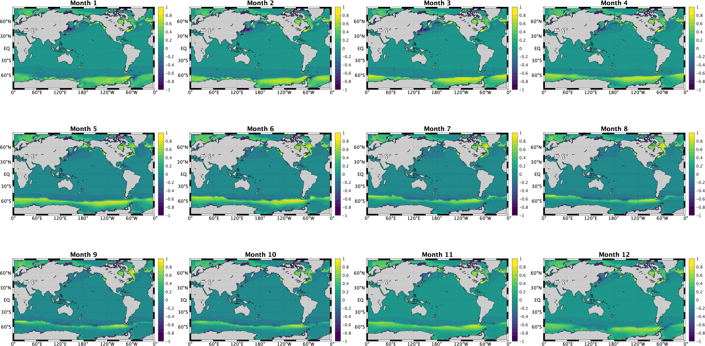
Similarly, we get the differences for \(w\):
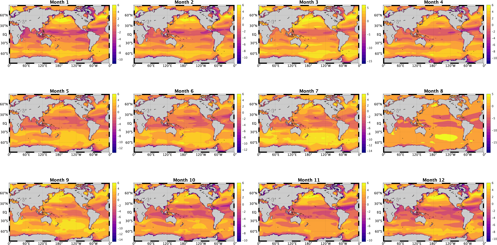
Now, we look at the ensemble minimums are presented below, first for \(f_{sic}\):
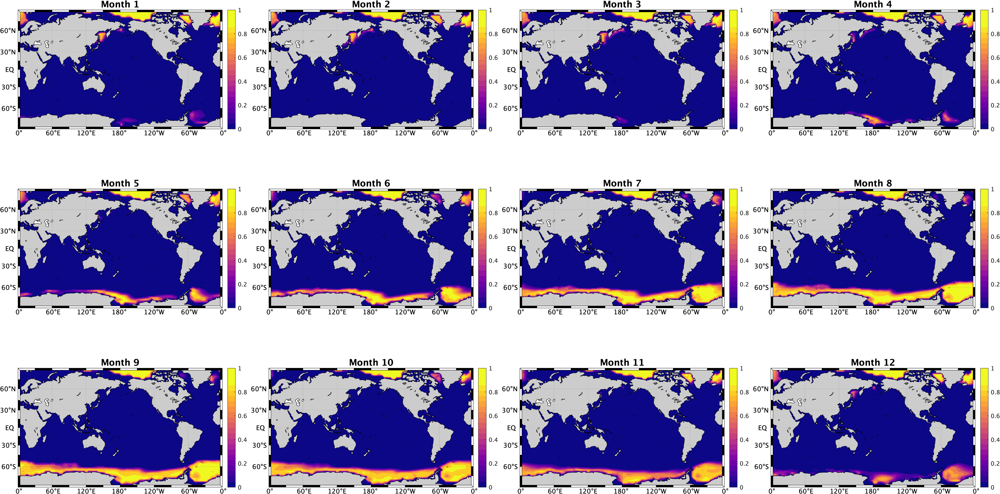
The minimums for \(w\) are next presented below:
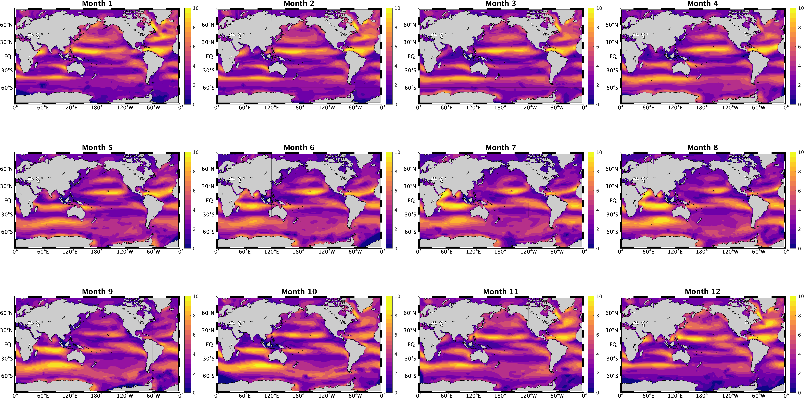
The ensemble maximums are presented below, first for \(f_{sic}\):
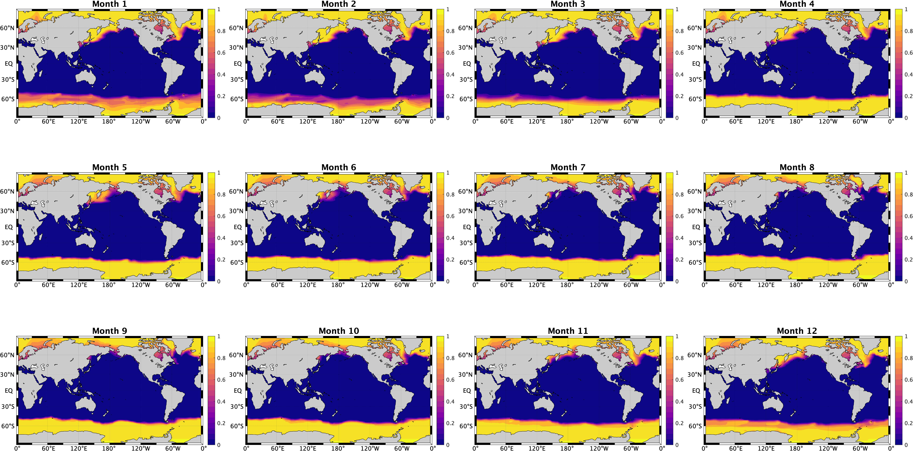
The maximums for \(w\) are next presented below:
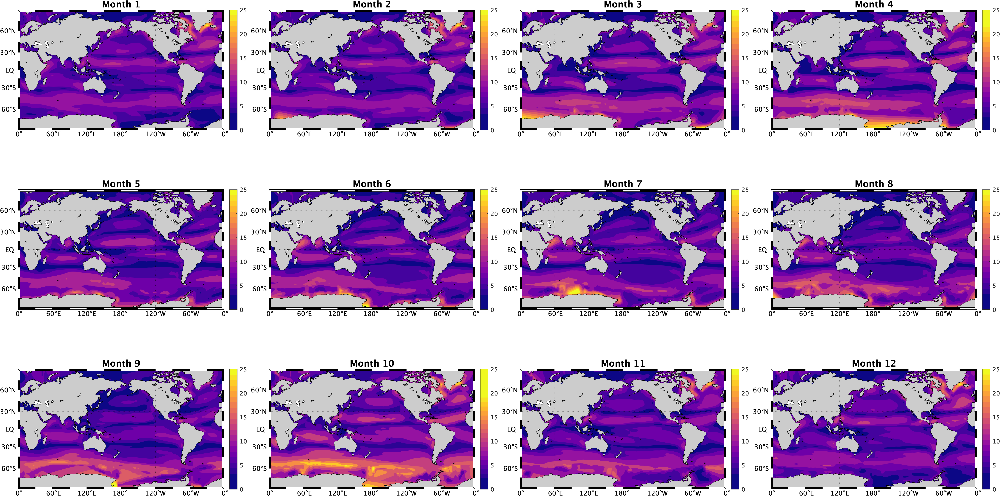
Applying the definition of spread from above, I now present the ensemble spreads for \(f_{sic}\):
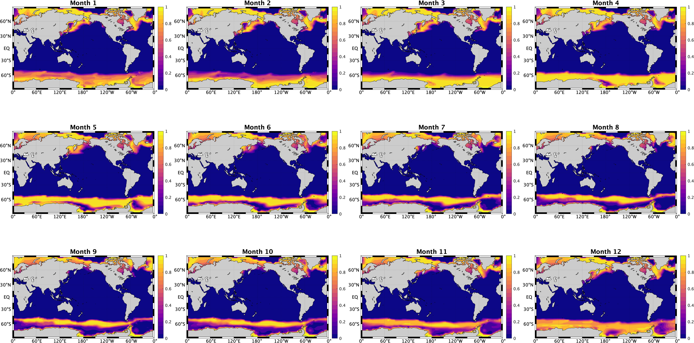
I also present the spread for \(w\):
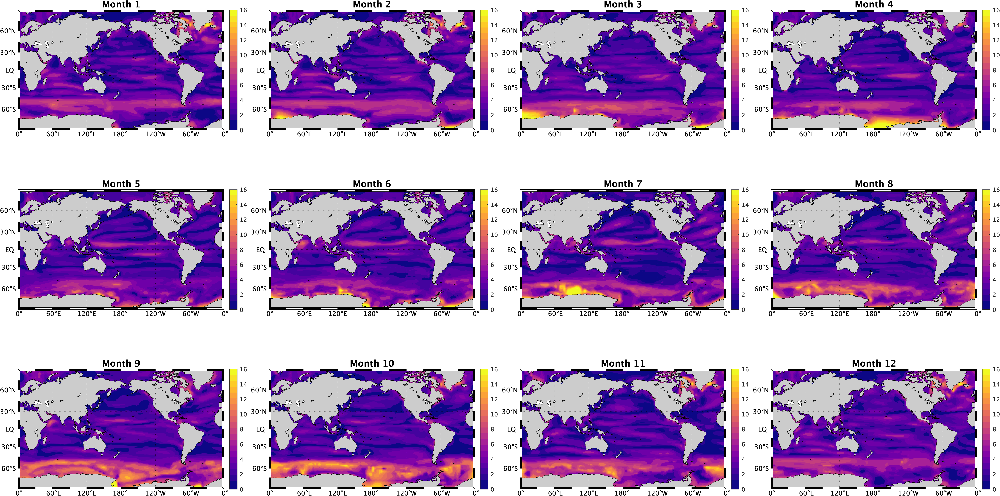
N.B. It is important to note the NCAR data has misplaced NaN data present straight after reading from the .nc data downloaded from the WHOI server.